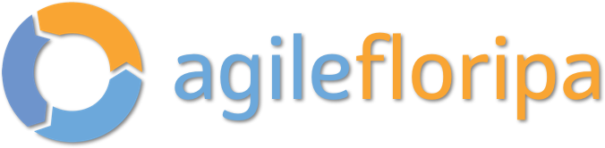

    <!--background color-->
    <script type="text/javascript">
        document.write ('<body style="background: Gainsboro; background-attachment: fixed;">')
    </script>

    <section id="conference" class="black-frame about about-container about-container-top">
      <h1>{{ page.title }}</h1>

      <div class="icon-about">
        
      </div>

      <h2 class="second">Tema</h2>

      <p>Existe Transformação Digital?</p>

      <h2 class="third">Missão</h2>

      <p>
        Fortalecer a comunidade de software em Florianópolis e Santa Catarina, além de proporcionar espaço para que as grandes atividades e inovações realizadas no nosso estado sejam compartilhadas de maneira transparente e horizontal!
      </p>

      <h2 class="fourth">Objetivos</h2>

      <p>Dar espaço aos palestrantes da terra e recebendo convidados de comunidades parceiras e profissionais com grande experiência, o Agile Floripa tem por objetivo se firmar no calendário dos eventos de agilidade nacionais e se tornar referência de conhecimento e compartilhamento.</p>

      <h2 class="fourth">Como nos organizamos</h2>

      <p>
        Nossas atividades são organizadas por um comitê voluntário que dedica tempo e expertise acreditando na cooperação e multidisciplinaridade. Nossas contas são abertas e a Agile Alliance Brazil nos auxilia com administração e emissão de notas fiscais - todo o lucro é revertido para iniciativas da comunidade.
      </p>
    </section>
